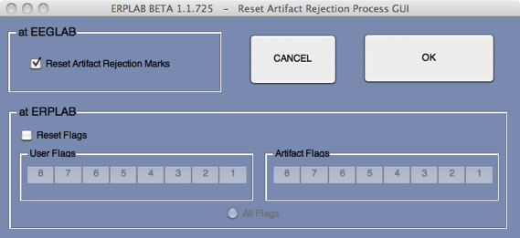
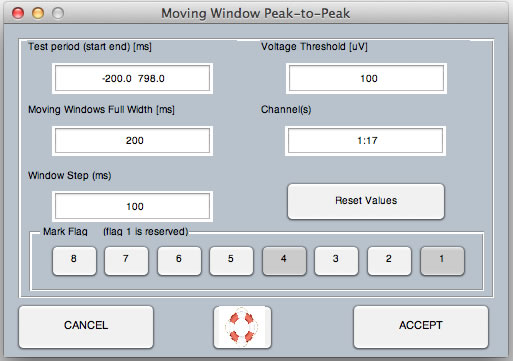
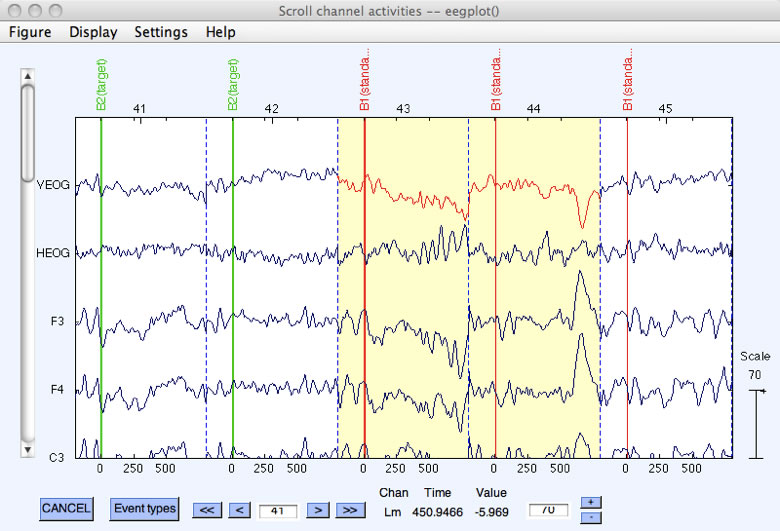
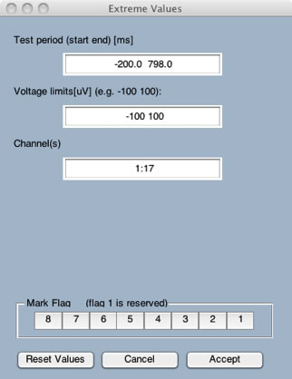
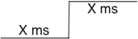
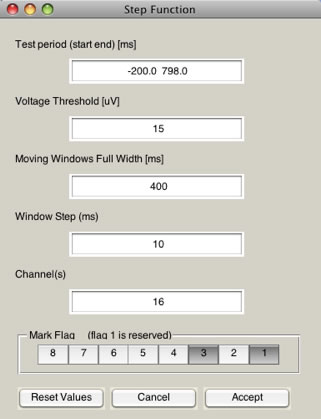
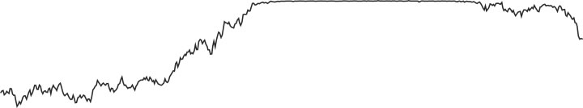
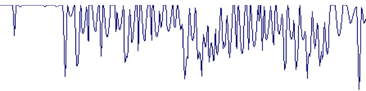
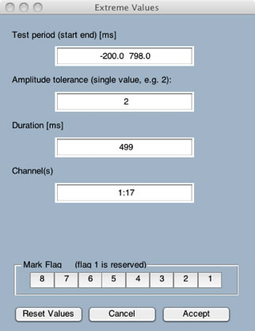

The combination of EEGLAB and ERPLAB yields several different ways to detect and reject artifacts. It is important to distinguish between artifact rejection and artifact detection. Most of the routines described in this section detect epochs that contain artifacts and mark them in the reject field of the EEG structure (in the EEG.reject.rejmanual and EEG.reject.rejmanualE fields) as well as in the artifact flags of the EVENTLIST structure. The epochs still remain in the dataset. Rejection occurs during averaging. That is, epochs marked for rejection are not included in the ERP averages (unless you tell the averaging routine to include them ).
Artifact detection/rejection is ordinarily performed on epoched EEG data. However, it is sometimes useful to delete "crazy" sections of the continuous EEG (e.g., prior to performing ICA). Procedures for this are described in the next section. The routines described on the present page can be applied only to epoched datasets.
EEGLAB contains several artifact detection functions, and ERPLAB adds a set of additional artifact detection functions. You can use both the EEGLAB and ERPLAB functions, because they all end up marking artifacts in the same way so that they are excluded from the averaged ERPs (but see below for important information about synchronizing the EEGLAB and ERPLAB artifact tracking information).
Artifact detection is best conceived as a signal detection problem, in which evidence for a signal (the artifact) is compared against a threshold to make a present/absent decision (for a general overview of this conceptualization, see pp. 152-154 in Luck, 2005, An Introduction to the Event-Related Potential Technique). ERPLAB contains several different artifact detection functions, each of which is designed to detect a specific type of artifact (e.g., blinks, eye movements, EMG bursts, etc.). To determine whether an EEG epoch contains an artifact, a function is applied to the data from that epoch. This function returns a value, which is related to the strength of evidence for the presence of a specific artifact in that epoch. This value is then compared with a threshold, and the epoch is marked for rejection if the value exceeds the threshold. The function is applied to a single channel at a time, and EEGLAB keeps track of which channels contained artifacts in each epoch. However, the entire epoch is excluded from the ERP averages if one or more channels contains an artifact. It is not currently possible to exclude only some channels from a given epoch.
There are several artifact detection routines, each of which is specialized for detecting a different type of artifacts. Each can operate on any subset of the channels (or all of the channels). The epochs that are marked for rejection by one function will stay rejected when you run the next function. If you want to start over, you can clear all the rejections by selecting ERPLAB > Artifact Detection > Clear Artifact Detection Marks on EEG (see screenshot below). This function allows you to clear EEGLAB's artifact rejection marks in the EEG structure and to clear specific flags in the EVENTLIST structure. Alternatively, you can just reload a previous dataset (one that was created prior to artifact detection).

Artifacts can also be manually marked for rejection (or unmarked) in an epoched dataset with EEGLAB's Tools > Reject data epochs > Reject by inspection routine. This routine allows you to view an epoched dataset, and epochs that have already been marked for rejection are shaded. To manually mark an epoch for rejection, simply click on it (at which point it will become shaded). If an epoch is already marked for rejection, you can unmark it by clicking on it (which will be indicated by removal of the shading). When you are done, click the Update Marks button to save the marks in the EEG structure.
A slight complication arises when EEGLAB's artifact detection features (including rejecting trials by visual inspection) are used in combination with ERPLAB. Specifically, because EEGLAB doesn't know anything about the artifact flags in the EVENTLIST structure, the EEGLAB artifact detection routines and the manual artifact marking/unmarking feature in the Tools > Reject data epochs > Reject by inspection routine do not update the artifact flags in the EVENTLIST structure. In addition, if you manually change the artifact flags in the EventList structure (e.g., with a script or by editing a text version of the EventList structure), these changes will not be automatically propagated to EEG.reject. In these cases, you can synchronize the information in the EventList flags and in EEG.reject with the ERPLAB > Artifact Detection > Synchronize Artifact Info in EEG and EVENTLIST command. In addition, when you create averaged ERPs using ERPLAB > Compute Averaged ERPs, ERPLAB will automatically check for any differences between the EventList flags and EEG.reject; if it detects any differences, it will give you the opportunity to synchronize before averaging.
When you run an artifact detection routine, the routine will print out the number of artifacts detected in the command window after it finished. If you want to see how many trials have been marked for rejection in a given dataset at some later time, you can select ERPLAB > Artifact Detection in epoched data > Summarize EEG Artifact Detection. This will create a table of the number of trials marked for rejection in each bin, along with the number of occurrences of each flag (which ordinarily corresponds to different types of artifacts).
You can also get this information after averaging with ERPLAB > Artifact Detection in epoched data > ERP Artifact Detection Summary Table.
You may also want to check the number of rejected trials after averaging. This will give you definitive information about how many trials were included in each bin. To do this, you can select ERPLAB > Artifact Detection > ERP Artifact Detection Summary Table. You can also check the number of accepted and rejected files in the ERP structure from the command line, because this information is stored in the ERP.ntrials field. For example, if you type ERP.ntrials into the command window (with an ERPset loaded), you will see something like this:
>> ERP.ntrials
ans =
accepted: [515 115]
rejected: [490 110]
invalid: [0 0]
arflags: [2x8 double]
ERPLAB provides several different artifact detection functions, each of which is particularly useful for certain types of artifacts. The basic operation is similar for all functions. Here we will explain the Moving Window Peak-to-Peak Function in detail and then describe the basics of the other functions.
The most broadly useful artifact detection function supplied by ERPLAB is the moving window peak-to-peak threshold function. Peak-to-peak amplitude is the difference between the most positive and most negative voltages within a window. A moving window peak-to-peak amplitude function computes the peak-to-peak amplitude within a series of windows within each epoch. For example, if your epoch goes from -200 to +798 ms, as in the screenshot below, you could select a window size of 200 ms and a step size of 20 ms. For each epoch, the routine would calculate the peak-to-peak voltage from -200 to 0 ms (see note below), from -180 to +20 ms, from -160 to +40 ms, etc. The routine would find the largest peak-to-peak amplitude from these windows for a given epoch of data, compare that largest value with a threshold value, and mark the trial for rejection if the largest value exceeds the threshold.

The parameters are shown in the screenshot above. The Test period (ms) field is the overall epoch period that will be tested (in milliseconds). This must be less than or equal to the epoch length of the data (the default is the entire epoch). The Voltage threshold (µV) field specifies the threshold for rejection; any epoch that exceeds this threshold will be rejected. In this example, we've entered 100 µV, so any epochs with a peak-to-peak amplitude of >100 µV will be rejected.
The Moving window full width (ms) in this example was set to 200 ms, which means that the routine will look for the peak-to-peak amplitude within successive 200-ms windows. The Window Step (ms) value is the size of the step between successive windows; here we've chosen 100 ms, meaning that the windows will start at -200 ms, -100 ms, etc. A smaller step size is slightly more likely to catch artifacts, but makes the routine run more slowly. The Channel(s) field is used to list the channels that will be tested. The default is all channels. You can list individual channels separated by spaces (e.g., 1 3 4 8 19 22) or you can provide ranges of channels (e.g., 1:17). In this example, the routine was applied to all channels.
The final section of the window is used for indicating which flag(s) in the EVENTLIST structure will be set for epochs marked for rejection. Flag 1 is mandatory, but you can also set a custom flag. These flags can be used to count the number of artifacts of each type (as described above).
Once you click OK, the routine will test all epochs in the current dataset. After all epochs have been checked, it will print a summary of the number of trials rejected in each bin in the Matlab command window. The routine also puts up the Plot > Channel data (scroll) window so that you can check whether the artifact rejection worked properly. You should always do this – artifacts vary considerably across subjects, and parameters that work well for one subject may not work for another.
Five epochs of data are shown in the screenshot below. Epochs that are rejected are shaded in yellow, and the channels within an epoch that are responsible for the rejection have their waveforms drawn in red. You can see that two of the epochs are rejected.

In addition to putting up this window for viewing the data, the artifact detection routine will put up a window allowing you to choose whether you want to keep the new dataset that it created. If you are satisfied with the rejection, you should keep the dataset (and you may also want to save it to disk). If you are not satisfied, you can cancel and try again with new parameters.
Normally the Plot > Channel data (scroll) window allows you to manually "unreject" an epoch by simply clicking on it. For technical reasons, you cannot do this at this point. You must quit the plotting window, save the new dataset, and then launch the Plot > Channel data (scroll) window again to be able to manually mark and unmark epochs for rejection. And, as mentioned above, you should use the ERPLAB > Artifact Detection > Synchronize Artifact Info in EEG and EVENTLIST command after manually marking and unmarking epochs so that this information is propagated to the artifact flags in the EVENTLIST structure.
In the example shown in the screenshot above, the window size was set to 1000 ms. That is, the routine found the difference between the most positive and most negative points over the entire 1000-ms window rather than using a smaller sliding window. You should notice that the first of the two rejected epochs probably should not have been rejected. The polarity of the voltage deflection is the same in the VEOG channel and in the F3 channel; a true blink exhibits opposite polarity under versus over the eye, so this is not a blink. The second of the two rejected epochs shows this polarity inversion, and is a true blink. We would like to reject true blinks and not other voltage deflections. Using a smaller sliding window rather than a single broad window can help with this, because a true blink has a large voltage deflection within a narrow time window. When we changed the window size from 1000 ms to 200 ms, only the second of these two trials was marked for rejection. The voltage changed gradually over the epoch in the first of these two epochs, and so this epoch was no longer rejected. The lesson here is that you should use a long window if you want to be sensitive to both gradual and sudden changes in voltage, whereas you should use a short window if you want to be sensitive to relatively sudden changes.
Imagine that you wanted to use this function to detect both blinks in the VEOG channel and large voltage excursions in all of the other channels. However, if you set the threshold low enough to detect all blinks in the VEOG channel, it will end up rejecting perfectly fine trials in the other channels (e.g., trials with large P3 deflections). To solve this problem, you can simply run this routine twice, once applying it to the VEOG channel with a relatively low threshold (e.g., 30 µV), and once on all of the other channels with a relatively high threshold (e.g., 100 µV). The rejection marks accumulate each time you run an artifact rejection routine (until you clear them with ERPLAB > Artifact Detection > Reset Artifact Detection Marks and User Flags). Thus, you can use the various artifact detection routines in any combination, with any set of parameters, until you have marked all of the artifacts for rejection.
Note for ERPSS users: ERPSS stops looking for rejections in a given epoch once any artifact test fails, but ERPLAB always performs all artifact rejection tests. This is necessary to mark all channels that contain artifacts, as described in the preceding paragraph.
The simplest artifact detection function supplied by ERPLAB is the Simple voltage threshold. This routine, which is like the artifact detection routines provided by most commercial software packages, simply determines whether the voltage at any point in a user-defined test period exceeds a threshold. The test period can be the entire epoch (which is the default), or you can specify a subset of the epoch. In the screenshot below, the test period goes from -200 ms to +798 ms (which was the entire epoch length). The screenshot also shows the threshold values, which in this case are set at -100 and +100 µV. An epoch will be marked for rejection if the voltage at any time in the test period is less than the first value (-100 µV in this example) or greater than the second value (+100 µV in this example). The user also specifies which channels will be tested for artifacts (channels 1-17 in this example). You can list individual channels separated by spaces (e.g., 1 3 4 8 19 22) or you can provide ranges of channels (e.g., 1:14). You must also indicate which flag(s) in the EVENTLIST structure will be set for epochs marked for rejection. Flag 1 is mandatory, but you can also set a custom flag.

The step function was designed to find the step-like changes in voltage that are produced when subjects make saccadic eye movements, but it is useful for detecting other kinds of artifacts as well (e.g., blinks). The step function begins by defining a step-shaped function of a particular width (e.g., 200 ms at one voltage and then 200 ms at a different voltage). An example step function is shown below, followed bya screenshot of the window that allows you to enter the parameters for the function. As in the previous examples, we have selected a Test Period that goes from -200 to +798 ms. We've defined the Moving window full width as 400 ms (200 ms before and 200 ms after the voltage transition, which is usually the best setting for eye movements). And we've defined the Window Step as 10 ms. The routine then checks for step-shaped segments of data, beginning at the start of the Test Period, and shifting to the right according to the Window Step. In the present example, it would begin by examining the period from -200 to +198 ms, then shift to the period from -190 to +208 ms, etc. As in the Blink Detection routine, a smaller Window Step value will be slightly more likely to detect artifacts but will make the routine run more slowly. You will need to experiment with it to find the best tradeoff between these factors.


There are two ways of thinking about how the step function works. First, the covariance between the step function and the data is computed in each step, providing a measure of the extent to which that segment of data looks like a large voltage step. This is done across the entire Test Period, and the epoch is rejected if the largest covariance is greater than the rejection threshold. It turns out that this is computationally identical to taking the mean voltage from the first half of the step and subtracting it from the mean voltage from the second half. That is, the mean voltage between -200 and -2 ms would be subtracted from the mean voltage between -0 and +198 ms. Then the mean voltage between -190 to +8 ms would be subtracted from the mean voltage between +10 and +208 ms. This would be done for each interval through out the Test Period, and the largest of these voltage differences is compared with the rejection threshold to determine whether the present epoch should be marked for rejection.
Note: This function is not yet fully implemented as described here, so we recommend that you avoid it or use it with caution in this version. The Step Function (described previously) works very well for detecting blinks, and we recommend that you use it instead.
This function finds artifacts that are shaped like a typical blink, which we represent by a Chebyshev function of a specific width. To find this shape, the function computes the covariance between a segment (window) of the epoch and the Chebyshev function. The larger the covariance, the more evidence we have that a large blink-shaped voltage deflection is present in that window. Imagine, for example, that you specify a Blink Width of 400 ms and a Test Period of -200 to 796 ms, as shown in the screenshot to the left. The function would first compute the covariance between a 400-ms wide Chebyshev function and the EOG waveform from -200 to +196 ms. If you have specified a Window Step of 20 ms, the function would then compute the covariance between the Chebyshev function and the EOG data from -180 to +216 ms. It would continue this process for successive 400-ms windows. It then compares the largest of these covariance values to the threshold, and the epoch is marked for rejection if the largest covariance exceeds the threshold.
What happens if the blink started before the epoch began, so that only the second half of the blink was present in the epoch? You can actually specify a Test Period that starts before the epoch and ends after the epoch if you wish. For example, with a 400-ms blink width, you could specify a Test Period that began at -400 ms. For the first window tested in each epoch (from -400 to 0 ms), the rightmost 200 ms of the Chebyshev function would be compared with the EOG data from -200 to -4 ms. Similarly, you could specify that the Test Period ends at 996 ms; for the last window tested in each epoch, the leftmost 200 ms of the Chebyshev function would be compared with the EOG data from 600 to 796 ms.
This function finds sudden shifts in voltage between one sample and the next. You simply select the threshold, and it rejects any epochs in which the difference in voltage between consecutive sample points exceeds this threshold.
This function is designed to find periods of "blocking" (saturation or flatlining of the amplifier or analog-to-digital converter). Here's what blocking typically looks like in an EEG recording:

You might think you could detect this sort of flatline pattern just by looking for periods during which the voltage remains constant over a period of time. However, due to noise, the voltage may not be exactly constant. Also, it may go back and forth between the flatline value and non-flatlined values, as in this example:

Thus, we use the following algorithm (originally developed by Jon Hansen for ERPSS):
The optimal tolerance and Duration values will depend on the nature of your system. Typical values might be 1 µV for tolerance and 200 ms for Duration. This would lead to the rejection of any epochs in which more than 200 ms worth of points are within 1 µV of the maximum (or minimum) voltage in the epoch.

| <<Epoching Bins | Table of Contents | Rejecting Artifacts in Continuous Data>> |
In this example, the data were sampled at 500 Hz (1 sample every 2 ms), and the 1000-ms epoch consisting of 500 samples began at -200 ms and ended at 798 ms (not at 800 ms, because the point at 798 ms represents the voltage from 798 ms to 799.99999 ms). Similarly, the 200-ms moving window actually goes from -200 to -4 ms, from -180 to +16 ms, etc.